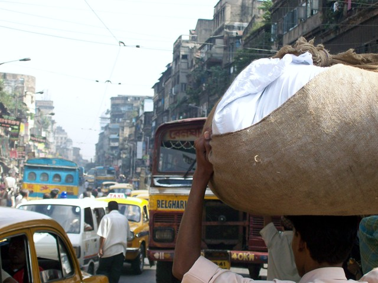
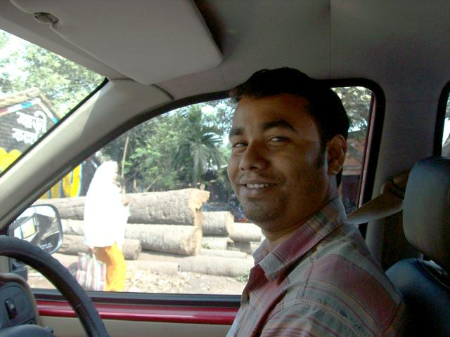
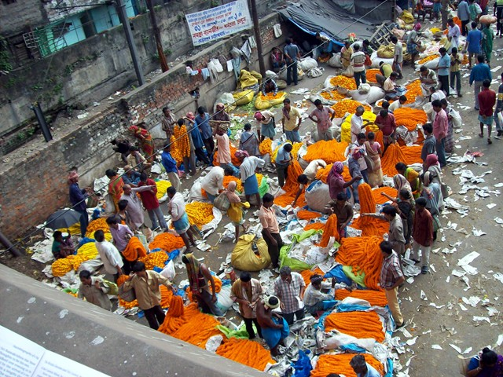
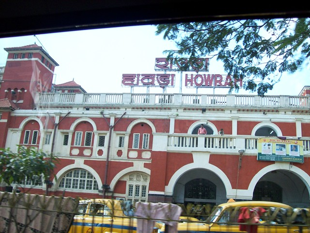
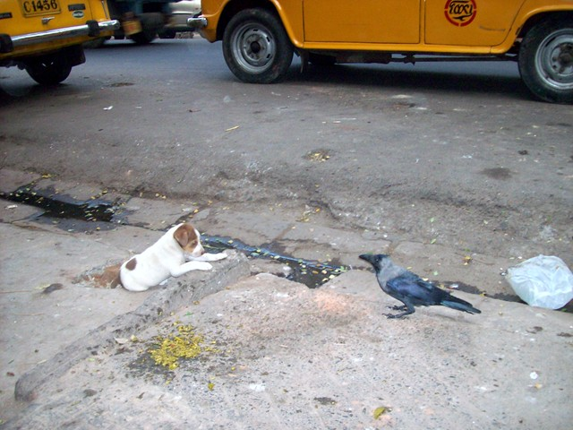
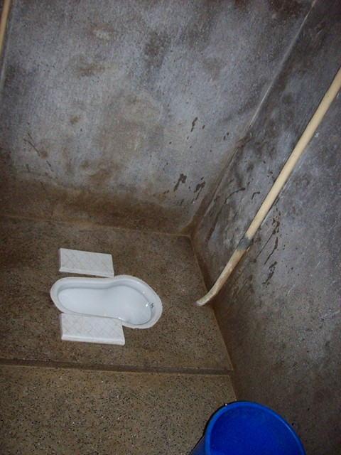
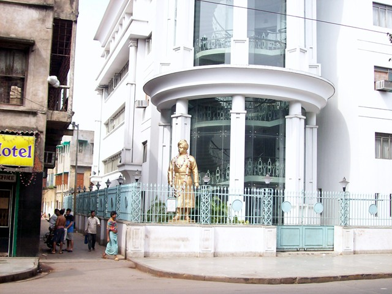
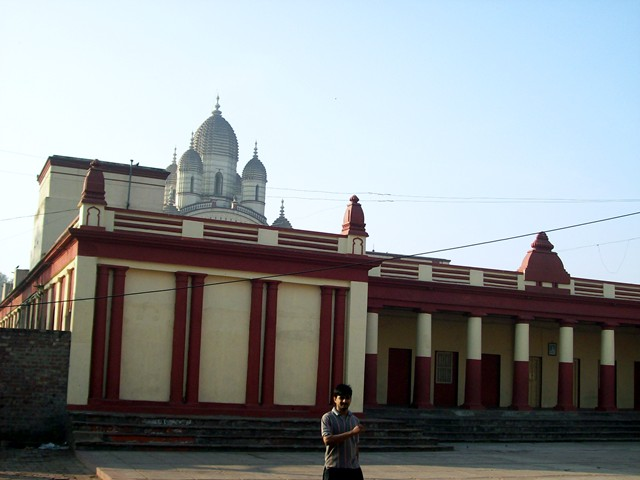

Kolkata

Kolkata
Can't imagine doing this trap alone. India is Navigation:Impossible. So you land at the airport and then what? The rickshaw wallahs don't speak English. The old cities are mazes. The rickshaw guys don't know where major streets are three kilometers away. Everything that costs more than Rs 10 involves bargaining, and you don't know the price of anything. A typical rickshaw fare is Rs 35. The rickshaw guys will charge you 10 times the going fare (thereby ripping you off by US$1.50).
And you can't judge what's OK for tourists to eat. I studied Ram and found he had an implicit three-tier classification system. Green-OK for tourists. Yellow-OK for him. Red-fly density over 1/cm3.

Pradip, our driver. He has a flashing neon Ganesh on his dash. I asked him to get me a Shiva for mine. I'm not sure if it's legal in Virginia though; they won't even let a homie like me have purple undercarriage lights. I read the law. Pradip saved up, bought a minivan, and now has a limo service with several employees.

Flower market near Howrah Station. This was a drive-by pic. There are cops all over because Howrah is considered critical infrastructure and you can lose a camera taking a picture.

Howrah Station

Kolkata standoff

The Indian toilet: Learning to use familiar muscles in whole new combinations.
Found that Indians regard toilet paper as gross: if you don't use water, you're not really clean. I once saw a News of the Wierd blurb about a retired English colonel who'd published an letter to the editor berating the public for using public toilets, instead of going #2 only in the morning when one can bathe after. ("You can train yourself to wait.") I thought he needed an appointment with Dr. Freud, but perhaps he was Indian his last lifetime. The Indian attitude is, if you use toilet paper, you're still dirty. Only water counts.
Ram had suggested I bring, um, moistened towelettes with me. That sounded like a good idea until I found myself trucking thru restarants with a brilliant yellow economy-sized tube of asswipe tucked under my arm. So I learned to do things the Indian way.

Statue of Swami Vivekananda the Ramakrishna Mission.
Vivekanandaji came to America before 1920, gave lectures, and published writings on the different paths of yoga. He had a famously sharp wit. When some yahoo asked "What's the difference between a babu and a baboon?", he shot back "The difference between a Scot and a sot." (One suspects the questioner was both.)

Ramakrishna Temple
Ramakrishna Paramahansa hasn't gotten much press in the US, but considering that he was the guru of Swami Vivekananda and Master Mahasaya, he was a clearly a star of the first spiritual magnitude. There are Ramakrisha missions throughout the world that teach philosophy. But what about meditation techniques? What did he teach that produced such great disciples? Upon inquiry, you have to be a renunciant to get meditation techinques. Makes me glad I'm following that other Paramahansa.